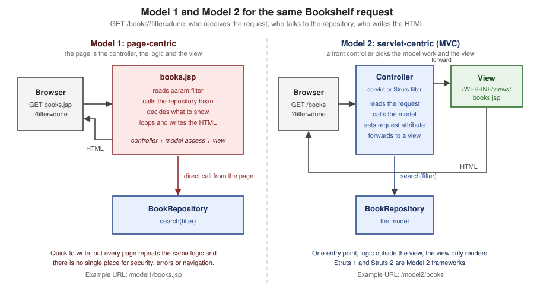

Introduction & History
|
This content was generated with the assistance of AI and should be verified against the official documentation before being relied on in production. The reference material consulted while preparing these pages is listed in the section bibliography. |
This page is written against Jakarta Pages 4.0 (the specification still titled "Jakarta Server Pages"), Jakarta Expression Language 6.0, Jakarta Standard Tag Library 3.0 (Jakarta Tags), Jakarta Servlet 6.1, Apache Tomcat 11.0.26, Apache Struts 7.4.0 (released on 2026-10-02, with 6.12.0 as the maintained 6.x line) and Java 21; the versions, dates and links below were verified on 2026-10-08. The page tells how Java web development got from CGI programs to servlets, JSP and the Struts framework, which parts of that history are still alive in Jakarta EE 11, which are end of life, and how to decide whether JSP or Struts is the right tool today. Every example was compiled and run in a scratch Tomcat 11.0.26 on JDK 21 (two Maven WAR projects, and a small standalone project for the template-engine comparison); each is followed by the official page it derives from. The running scenario is the Bookshelf, a catalogue of books that the rest of this section grows one concept at a time: a plain Jakarta Pages application in Part I and a Struts application in Part II.
Where This Page Sits
JSP is the oldest of the server-side view technologies of the Java platform, and Struts is the framework that made the servlet-centric way of building JSP applications popular. Both are now maintenance and modernisation knowledge for most teams: the Jakarta EE Tutorial says Jakarta Pages is archived in favour of Facelets, while Struts 7.4 and 6.12 are released and supported and Struts 1 and 2.5 are end of life. The page therefore does two jobs. It explains the vocabulary and the history that every later page of the section assumes, and it gives the facts needed to decide what to do with a JSP or Struts application that already exists.
| Reader | What to take from this page |
|---|---|
Maintains a JSP or Struts 2 application |
The status of every version (Struts 6, Struts 7 and the Version Map), the |
Reads a Struts 1 application |
The Struts 1 concepts and their Struts 2 equivalents (Struts 1: Model 2 as a Framework), the end-of-life facts and the successors the Struts project itself recommends. |
Learns the Java web stack from its roots |
The timeline (A Timeline from CGI to Jakarta EE 11), CGI and servlets (Static Content, Dynamic Content and CGI), and Model 1 versus Model 2 (Model 1 and Model 2), with runnable code for each. |
Chooses a technology for new work |
The comparison tables (Comparison of Java View Technologies and Comparison of Action-Based Frameworks) and the decision guide (When to Choose JSP and Struts Today). |
The same family of questions is answered for a different stack in the Thymeleaf Introduction & Architecture page, whose comparison of template engines includes a row for JSP, and the Spring Boot overview of server-side web UI frameworks positions JSP, Thymeleaf and the others inside Spring Boot. The Java language itself is documented in the Java Reference.
Static Content, Dynamic Content and CGI
A static page is a file that the web server returns unchanged: every visitor gets the same bytes. A dynamic page is computed for each request from the request itself (parameters, headers, cookies, the session) and from data that lives elsewhere (a database, another service). The first mechanism the web had for dynamic pages was the Common Gateway Interface. RFC 3875 describes CGI as a simple interface for running external programs, software or gateways under an information server in a platform-independent manner, and it records that the interface had been in use by the World Wide Web since 1993. A CGI program is started by the web server for each request, receives the request through environment variables and standard input, and writes the response to standard output.
The Jakarta Servlet specification names the two weak points of that model when it compares servlets with CGI: servlets are generally much faster than CGI scripts because a different process model is used, and they use a standard API that is supported by many web servers, with all the advantages of the Java programming language. A servlet is a Java class managed by a container (Tomcat, Jetty, GlassFish and others); the container loads it once, calls it on a thread for each request, and takes care of the HTTP details.
| CGI program | Servlet | JSP page | |
|---|---|---|---|
What runs the code |
A new operating-system process for each request, started by the web server |
One instance per servlet in a long-lived container, called on a thread per request |
A servlet generated from the page by the container and then run like any other servlet |
What the author writes |
A program that prints headers and markup |
A Java class that implements |
A template: markup with dynamic parts (expressions, actions, tags) |
Typical weakness |
Process start-up cost; the language of the program decides everything else |
HTML inside Java strings, hard to design and easy to leave unescaped |
Logic creeping into the template when the page also acts as controller |
Where it lives today |
Still defined by RFC 3875; rarely used for new Java work |
Jakarta Servlet 6.1, the base of every Java web framework (Struts, Spring MVC, Faces) |
Jakarta Pages 4.0, in the EE 11 Web Profile |
The Bookshelf as a Plain Servlet
The first Bookshelf page has no template at all. The servlet asks the repository for the books and prints the markup itself. This is how Java web pages were written before JSP, and it shows what a template system removes.
@WebServlet("/servlet-style")
public class PlainServletBooks extends HttpServlet {
private final BookRepository repository = new BookRepository();
@Override
protected void doGet(HttpServletRequest request, HttpServletResponse response) throws IOException {
response.setContentType("text/html;charset=UTF-8");
PrintWriter out = response.getWriter();
out.println("<!DOCTYPE html>");
out.println("<html><body>");
out.println("<h1>Bookshelf</h1>");
out.println("<ul>");
for (Book book : repository.findAll()) {
out.println("<li>" + book.title() + " by " + book.author() + " (" + book.year() + ")</li>");
}
out.println("</ul>");
out.println("</body></html>");
}
}With the WAR deployed under the context /bookshelf, curl http://localhost:18080/bookshelf/servlet-style returned:
<!DOCTYPE html>
<html><body>
<h1>Bookshelf</h1>
<ul>
<li>Dune by Frank Herbert (1965)</li>
<li>Neuromancer by William Gibson (1984)</li>
<li>Hyperion by Dan Simmons (1989)</li>
</ul>
</body></html>The page works, but the markup is buried in string literals, a designer cannot edit it, and the values are written
without escaping: a title that contains <script> would reach the browser as markup. A template system keeps the
markup as markup and makes escaping an explicit, visible step.
Template Systems and JSP
A template system inverts the servlet: the author writes the page as template data (the fixed text and markup) and adds dynamic data to it with a small number of constructs. The Jakarta Pages specification describes the technology with four concepts: template data, the addition of dynamic data, the encapsulation of functionality (JavaBeans components and tag libraries that deliver custom actions, functions, listener classes and validation), and good tool support. Its stated benefits include the separation of the developer and the author roles and the separation of dynamic from static content.
JSP is a template system that is servlet-based. The specification divides the life of a page into two phases. In the translation phase the container validates the syntax of the page and determines the page implementation class that corresponds to it; in the execution phase the container manages instances of that class in response to requests. In practice the page becomes a servlet, which is why everything that is true of servlets (threading, scopes, sessions, filters, the servlet context) is true of JSP.
The next example is the Bookshelf view as a Jakarta Pages template. It is the view of the Model 2 version shown later in this page, so it reads the list from a request attribute that a controller has set; the page itself contains no Java.
<%@ page contentType="text/html; charset=UTF-8" pageEncoding="UTF-8" %>
<%@ taglib prefix="c" uri="jakarta.tags.core" %>
<!DOCTYPE html>
<html>
<body>
<h1>Bookshelf (Model 2)</h1>
<ul>
<c:forEach var="b" items="${books}">
<li><a href="book?id=${b.id}"><c:out value="${b.title}"/></a> by <c:out value="${b.author}"/> (${b.year})</li>
</c:forEach>
</ul>
</body>
</html>The first request translates and compiles the page. Tomcat keeps the generated source in its work directory, so the
translation phase can be inspected. For the small page book.jsp (the detail view of one book) the generated class
extends Tomcat’s HttpJspBase, has _jspInit, _jspService and _jspDestroy methods, and writes the template
text with out.write; this is the relevant part of what Tomcat 11.0.26 generated:
public final class book_jsp extends org.apache.jasper.runtime.HttpJspBase
implements org.apache.jasper.runtime.JspSourceDependent, org.apache.jasper.runtime.JspSourceImports {
public void _jspService(final jakarta.servlet.http.HttpServletRequest request,
final jakarta.servlet.http.HttpServletResponse response)
throws java.io.IOException, jakarta.servlet.ServletException {
// ... only GET, POST, HEAD and OPTIONS are accepted ...
final jakarta.servlet.jsp.PageContext pageContext;
jakarta.servlet.http.HttpSession session = null;
jakarta.servlet.jsp.JspWriter out = null;
// ...
try {
response.setContentType("text/html; charset=UTF-8");
pageContext = _jspxFactory.getPageContext(this, request, response, null, true, 8192, true);
session = pageContext.getSession();
out = pageContext.getOut();
out.write("<!DOCTYPE html>\n");
out.write("<html>\n");
out.write("<body>\n");
out.write("<h1>");
if (_jspx_meth_c_005fout_005f0(_jspx_page_context))
return;
out.write("</h1>\n");
// ...The generated source shows four facts that the later pages of the section rely on: the template text becomes out.write
calls, each tag becomes a call to a generated method that drives a tag handler, a JSP gets a session by default
(pageContext.getSession(), the session page attribute defaults to true), and the output goes through a
JspWriter with a buffer of 8192 characters, so a page can still change its mind (an error page, a redirect) before
the first byte is sent. The jakarta.tags.core URI is the Tags 3.0 identifier of the core library.
JavaBeans, Tag Libraries and "JSP in J2EE"
The first books about JSP describe the technology as part of J2EE, the Java 2 Platform, Enterprise Edition, and present three ways of keeping Java out of the page: JavaBeans components (objects with a no-argument constructor and getters and setters that the page reads through actions or expressions), custom tag libraries, and servlets that prepare the data before the page runs. All three survive. The vocabulary changed with the platform’s ownership:
| Name | Platform | Namespace | Notes |
|---|---|---|---|
J2EE |
Java 2 Platform, Enterprise Edition (the books' era) |
|
Servlet 2.3 / JSP 1.2 (2001), Servlet 2.4 / JSP 2.0 (2003) |
Java EE |
Java Platform, Enterprise Edition |
|
JSP 2.1 (2006) to JSP 2.3; Servlet 3.0 (2009) to 4.0 (2017) |
Jakarta EE 8 |
Eclipse Foundation; fully compatible with Java EE 8 |
|
The same specifications under the Eclipse Foundation Specification Process |
Jakarta EE 9 and 9.1 |
Eclipse Foundation |
|
Namespace change only (Servlet 5.0, Pages 3.0, Tags 2.0) |
Jakarta EE 10 |
Eclipse Foundation |
|
Servlet 6.0, Pages 3.1, Tags 3.0, Faces 4.0 |
Jakarta EE 11 |
Eclipse Foundation |
|
Servlet 6.1, Pages 4.0, EL 6.0, Tags 3.0, Faces 4.1; Java 17 or higher |
Source: Jakarta EE 11 release
Applets and Servlets
Early JSP material contrasts servlets with applets, Java programs downloaded to the browser, as the two ways of running
Java in a web application. The applet side of that comparison is gone. Browsers stopped supporting applets, the Applet
API was deprecated for removal in JDK 17, and JEP 504 removes the java.applet package in JDK 26 (together with the
appletviewer tool, which had already been removed in JDK 11). The Pages specification followed: the jsp:plugin
action and its related actions, which generated the markup that loaded an applet, were deprecated in Pages 3.1 because
no major browser supports the elements they produced, and they were removed in Pages 4.0. The server-side half of the
comparison, servlets and JSP, is what remains.
Source: JEP 504 — Remove the Applet API
A Timeline from CGI to Jakarta EE 11
The timeline puts the specification and framework releases that matter for this section on one axis. The dates come from the Java Community Process final-release dates of the JSRs, the Struts announcement pages and the Jakarta specification pages (ballot dates are the dates the specification committee ballot concluded), and are listed with their sources in the table below the figure.
| Date | Event | Source |
|---|---|---|
1993 |
CGI is in use by the World Wide Web. |
|
2000, June 2001 |
The Struts project starts in 2000; Struts 1 is released in June 2001. |
|
2001-09-25 |
Servlet 2.3 and JSP 1.2 (JSR 53) final release. |
|
2002-07-08 |
JSTL 1.0 (JSR 52) final release. |
|
2003-11-24 |
JSP 2.0 (JSR 152) and Servlet 2.4 (JSR 154) final release; JSP 2.0 is the version that makes the Expression Language part of JSP. |
|
2006-05-11 |
JSP 2.1 (JSR 245) final release; the JSR text explains that JSP 2.0 was finalized before JSF 1.0 and could not follow its changing requirements. |
|
2006-11-07 |
Struts 2.0.1 beta: Struts 2 was originally known as WebWork 2, and the WebWork and Struts communities joined forces to create it. |
|
2007 |
Struts 1.3.8 and Struts 2.0.6 are released in February and March; Struts 2.0.11 is the general-availability release of October 2007. |
|
2008-12-04 |
Struts 1.3.10, the last Struts 1 release. |
|
2009-12-10 |
Servlet 3.0 (JSR 315) final release; the JSR set out annotations and web-framework pluggability as its goals. |
|
2013-04-05 |
Struts 1 end of life. |
|
2016-05-09 |
Struts 2.5 general availability. |
|
2017-09-05 |
Servlet 4.0 (JSR 369) final release. |
|
2020 |
Servlet 5.0 (ballot 2020-09-29) and Pages 3.0 (ballot 2020-11-06): the change of the namespace from |
|
2022 |
Struts 6.0.0 general availability on 2022-06-06; Pages 3.1 (ballot 2022-05-15) and Tags 3.0 (ballot 2022-05-17) in Jakarta EE 10. |
|
2023-10-30 |
Struts 2.5.x end-of-life announcement. |
|
2024 |
Pages 4.0 specification document dated 2024-04-01; Servlet 6.1 release ballot concluded 2024-06-04; Struts 7.0.0 general availability on 2024-12-19. |
|
2026-10-02 |
Struts 7.4.0 and 6.12.0 general availability. |
The Servlet 5.0 row deserves its own sentence, because the specification itself makes it: Jakarta Servlet 5.0 is only a
change of namespaces, so moving a Servlet 4.0 project to Servlet 5.0 and above requires replacing javax.* with
jakarta.* and nothing else. Servlet and JSP releases before JSR 53 (the first servlet and JSP versions) predate the
JCP records cited here and are left out of the table.
Model 1 and Model 2
Once the servlet and the JSP page both exist, the question is which of them does what. Two answers became the standard vocabulary for JSP applications:
-
Model 1 (page-centric): the request goes straight to a JSP page. The page reads the parameters, calls the business objects (usually through a JavaBean), decides what to show and writes the HTML. Variants of the page-centric design are role-based pages (one page for each kind of user), action targets (a page that only processes a form and forwards or redirects) and composite pages (a page assembled from included fragments).
-
Model 2 (servlet-centric, MVC): the request goes to a servlet, the front controller. The controller reads the request, calls the model, stores the result as request attributes, picks a view and forwards to it with a
RequestDispatcher. The view (a JSP) only renders what the controller prepared. Mapping the request to the unit of work is often done with the command pattern: one small object for each operation, selected by the request path.

| Concern | Model 1 | Model 2 |
|---|---|---|
Entry point |
Every page is an entry point |
One controller (or one filter) is the entry point |
Where the logic lives |
In the page, or in beans called from the page |
In the controller and in the model; the view contains presentation only |
Navigation |
Hard-coded in links, redirects and |
Decided in one place (the controller or its configuration) |
Security and cross-cutting concerns |
Repeated in each page, easy to forget in one |
One interceptor, filter or controller step for all requests |
Testing |
Needs a container |
The controller and the model are plain Java classes |
Page designers |
Must work next to Java logic |
Work on markup and tags only |
Fits |
Small, mostly-read pages and prototypes |
Applications with forms, validation, several views of the same data |
Model 1: the Page Does Everything
The Model 1 version of the Bookshelf search is one JSP page. It declares the repository as a bean in application scope
with jsp:useBean, reads param.filter and calls the repository method from an EL expression (method invocation in
EL is part of the Expression Language since EL 3.0, and Tomcat 11 supports it).
<%@ page contentType="text/html; charset=UTF-8" pageEncoding="UTF-8" %>
<%@ taglib prefix="c" uri="jakarta.tags.core" %>
<jsp:useBean id="repository" class="org.example.bookshelf.BookRepository" scope="application"/>
<!DOCTYPE html>
<html>
<body>
<h1>Bookshelf (Model 1)</h1>
<form method="get" action="books.jsp">
<input type="text" name="filter" value="<c:out value='${param.filter}'/>">
<button type="submit">Search</button>
</form>
<ul>
<c:forEach var="b" items="${repository.search(param.filter)}">
<li><c:out value="${b.title}"/> by <c:out value="${b.author}"/> (${b.year})</li>
</c:forEach>
</ul>
</body>
</html>curl "http://localhost:18080/bookshelf/model1/books.jsp?filter=dune" returned the form with the value kept and one list
item:
<h1>Bookshelf (Model 1)</h1>
<form method="get" action="books.jsp">
<input type="text" name="filter" value="dune">
<button type="submit">Search</button>
</form>
<ul>
<li>Dune by Frank Herbert (1965)</li>
</ul>Escaping is the page’s own job in Model 1. Sending the filter "><script>alert(1)</script> produced
value=""><script>alert(1)</script>", because c:out escapes the five XML characters by default.
The ${b.year} expression is written without c:out here because it is a number; the same expression on a string
would have been written unescaped.
Model 2: a Front Controller and a Command Map
The Model 2 version splits the same page in three. A Command is one unit of controller work: it fills the request and
returns the name of a view. The front controller maps the path after /model2 to a command and forwards to the
view with the RequestDispatcher. The views sit under /WEB-INF/views, where a browser cannot request them directly.
@FunctionalInterface
public interface Command {
String execute(HttpServletRequest request);
}
@WebServlet("/model2/*")
public class FrontController extends HttpServlet {
private final BookRepository repository = new BookRepository();
private final Map<String, Command> commands = Map.of(
"/books", request -> {
request.setAttribute("books", repository.search(request.getParameter("filter")));
return "books";
},
"/book", request -> {
String id = request.getParameter("id");
Book book = id == null ? null : repository.findById(Long.parseLong(id));
request.setAttribute("book", book);
return book == null ? "not-found" : "book";
});
@Override
protected void doGet(HttpServletRequest request, HttpServletResponse response)
throws ServletException, IOException {
Command command = commands.get(request.getPathInfo());
if (command == null) {
response.sendError(HttpServletResponse.SC_NOT_FOUND);
return;
}
String view = command.execute(request);
request.getRequestDispatcher("/WEB-INF/views/" + view + ".jsp").forward(request, response);
}
}The requests below ran against the WAR. The view is the books.jsp template shown earlier.
| Request | Status | Result |
|---|---|---|
|
200 |
The three books, each title linking to |
|
200 |
Only Hyperion |
|
200 |
|
|
200 |
The |
|
404 |
Tomcat’s error page, from the |
|
500 |
|
|
404 |
The container never serves anything under |
The last two rows are the lessons of Model 2. A controller is a single place where input must be validated (the id
parameter above should be checked, and an invalid one should become a 400 or a validation message, not an exception),
and the views are reachable only through the controller. Both ideas are what Struts and Spring MVC turn into
configuration: Struts gives every action an interceptor stack for exactly this kind of step.
Keeping Java Out of the Page
A Model 2 discipline can be enforced by the container. The scripting-invalid element of a jsp-property-group
turns scriptlets, declarations and expressions into translation errors for the pages it matches. The scratch WAR
declares it for the /strict/* pages and puts a scriptlet there:
<web-app xmlns="https://jakarta.ee/xml/ns/jakartaee"
xmlns:xsi="http://www.w3.org/2001/XMLSchema-instance"
xsi:schemaLocation="https://jakarta.ee/xml/ns/jakartaee https://jakarta.ee/xml/ns/jakartaee/web-app_6_1.xsd"
version="6.1">
<jsp-config>
<jsp-property-group>
<url-pattern>/strict/*</url-pattern>
<scripting-invalid>true</scripting-invalid>
</jsp-property-group>
</jsp-config>
</web-app><%@ page contentType="text/html; charset=UTF-8" %>
<html><body>
<% out.println("Hello from a scriptlet"); %>
</body></html>The request returned status 500, and the root cause of the error page read:
org.apache.jasper.JasperException: /strict/scriptlet.jsp (line: [3], column: [2]) Scripting elements ( <%!, <jsp:declaration, <%=, <jsp:expression, <%, <jsp:scriptlet ) are disallowed here.Design Patterns around Model 2
The books that describe Struts 1 list the design patterns behind Model 2 in an appendix. The patterns are still the vocabulary of the framework documentation, and the section covers each one on the page where its code lives.
| Pattern | Idea | Where it appears |
|---|---|---|
Front Controller |
One component receives every request and dispatches it |
The |
Service to Worker |
The controller delegates the work to a helper before choosing the view |
The command map above; the action class in Struts |
Composite View |
A page is assembled from reusable parts (header, menu, body) |
Includes, tag files and the Tiles plugin (Tag Files & Layouts in Part I and Tiles & Page Layouts in Part II) |
Synchronizer Token |
A one-time token in a form that the server checks, so a repeated submission can be recognised |
The token support of Struts (Double-Submit Tokens & Wait Pages in Part II) |
Command |
One object for each operation, chosen by the request |
|
The page-centric versus servlet-centric choice also settles an old architecture question from the Enterprise JavaBeans era: where the business logic lives. Today the answer is a service layer behind the controller, normally a Spring or CDI bean (see the Hibernate section for persistence); Enterprise JavaBeans are no longer a precondition for a Model 2 application.
Struts 1: Model 2 as a Framework
Struts started in 2000, and its first release came in June 2001. It packaged the Model 2 idea as a framework with a controller servlet, configuration files and a tag library, so that every application did not rewrite the front controller. The Struts site describes the framework as a request handler mapped to a URI, a response handler that transfers control to another resource, and a tag library for form-based applications, and it gives the reason for the name: the framework is meant to furnish the "invisible underpinnings" of professional application development.
The Struts 1 vocabulary and its Struts 2 counterparts:
| Struts 1 concept | What it is | Struts 2 and 7 counterpart |
|---|---|---|
|
The front controller servlet, mapped to a pattern such as |
|
|
The configuration file: form beans, global forwards, action mappings, controller, message resources, plug-ins |
|
|
The configuration of one request path (the |
The |
|
A named destination that an action returns |
A |
|
A bean that receives the form fields, with |
The action’s own properties (or a |
|
The unit of work with an |
An action class created for each request, usually extending |
Struts tag libraries ( |
JSP tags that bind to form beans |
The Struts tag library ( |
Tiles |
Page layouts and definitions |
The Tiles plugin (Tiles code bundled in the plugin since 6.3.0), or SiteMesh, or tag-file layouts |
Two properties of Struts 1 explain much of the move away from it. Its actions were shared between requests, so the Struts site’s primer tells readers that with Struts 1 they had to know a lot about writing code that runs in a multi-threaded environment, whereas each Struts 2 action is a plain object instantiated for each request. And its form beans were a second copy of the data (the form bean, then the business object), which Struts 2 removes by letting the action carry the properties.
The End of Struts 1
The Struts 1 end-of-life announcement of 2013-04-05 says that Struts 1.x has reached the end of its life and is no longer officially supported. It records that the last release, 1.3.10, was published in December 2008 and that, in the meantime, the community had pushed Struts 2 forward with as many as 23 releases by April 2013. The question-and-answer part of the announcement is the clearest statement of what end of life means for an application that still uses it:
| Question | Answer in short |
|---|---|
What happens to Struts 1 resources? |
They stay where they are: the documentation, the downloads of released 1.x versions, the source in the Apache Subversion repository and the artifacts in Maven Central. |
Will a security problem get a release? |
No. The project’s answer is that users must find mitigations, patch the source themselves or migrate. |
Is there an urgent need to remove Struts 1? |
The team knew of no urgent issue in 2013, but security and bug fixes would no longer be provided. |
Can a new project still use it? |
Basically yes, but the team does not recommend it; before any code is written it is easy to choose another framework such as Struts 2. |
What to migrate to? |
There is no drop-in replacement. Struts 2 is recommended as the successor; other candidates named by the project are Spring Web MVC, Grails and Stripes. |
Time has confirmed the warning. CVE-2014-0114 (Apache Commons BeanUtils as distributed in Struts 1.x, a class-loader
manipulation through crafted request parameters) was published after the end-of-life announcement, and Struts 1 has
no fix. The Struts 1 documentation is no longer online (https://struts.apache.org/1.x/ and the FAQ return 404); the
documentation archive of the last release is struts-1.3.10-docs.zip on archive.apache.org. The Part II page
Struts 1 (Classic) & Migration teaches enough of it to read and migrate legacy code, and only that.
WebWork, XWork and Struts 2
WebWork was another Model 2 framework, developed independently of Struts. Its second generation, WebWork 2, was built on a generic command-pattern engine called XWork that does not know about HTTP, with a web layer on top of it. The Struts announcement of the 2.0.1 beta in November 2006 describes the result in these terms: Struts 2 was originally known as WebWork 2, and after several years of independent work the WebWork and Struts communities joined forces to create it. The same announcement lists the design goals that Struts 2 took from WebWork: framework classes based on interfaces, core interfaces independent of HTTP, results that can help prepare the response (unlike Struts 1 forwards), tags that output stylesheet-driven markup, and intelligent defaults.
The three-way mapping of Model 2 onto Struts 2 is the one the later pages build on (see Architecture & Request Lifecycle):
| MVC role | Struts 2 component | Notes |
|---|---|---|
Controller |
|
A servlet filter, so it can sit in front of static resources and other filters; it finds the action mapping and runs the action through its interceptors |
Model |
The action (and the objects it calls) |
A plain Java class; its properties are filled from the request and are visible to the view |
View |
The result |
A JSP, a FreeMarker or Velocity template, JSON, a redirect, a stream or any other registered result type |
Other concepts of the architecture are named here once so that later pages can use them. The interceptors (Interceptors) wrap each
action (parameter binding, validation, file upload, exception mapping and so on) and replace the RequestProcessor of
Struts 1; the ActionContext is the per-request context; the ValueStack (ValueStack, ActionContext & OGNL) is the stack of objects (the action first)
that the tags and expressions search; and OGNL is the expression language that reads and writes the value stack.
The Bookshelf in Struts 7
The Struts version of the Model 2 Bookshelf has the same three roles as the servlet version, with configuration where the
servlet had code. It runs on Tomcat 11 with the Struts 7.4.0 dependencies imported from the struts2-bom. The
web.xml registers the filter:
<web-app xmlns="https://jakarta.ee/xml/ns/jakartaee"
xmlns:xsi="http://www.w3.org/2001/XMLSchema-instance"
xsi:schemaLocation="https://jakarta.ee/xml/ns/jakartaee https://jakarta.ee/xml/ns/jakartaee/web-app_6_1.xsd"
version="6.1">
<filter>
<filter-name>struts2</filter-name>
<filter-class>org.apache.struts2.dispatcher.filter.StrutsPrepareAndExecuteFilter</filter-class>
</filter>
<filter-mapping>
<filter-name>struts2</filter-name>
<url-pattern>/*</url-pattern>
</filter-mapping>
</web-app><?xml version="1.0" encoding="UTF-8" ?>
<!DOCTYPE struts PUBLIC
"-//Apache Software Foundation//DTD Struts Configuration 6.0//EN"
"https://struts.apache.org/dtds/struts-6.0.dtd">
<struts>
<package name="default" extends="struts-default" namespace="/">
<action name="books" class="org.example.bookshelf.BookAction">
<result>/WEB-INF/views/books.jsp</result>
</action>
</package>
</struts>package org.example.bookshelf;
import java.util.List;
import org.apache.struts2.ActionSupport;
import org.apache.struts2.interceptor.parameter.StrutsParameter;
public class BookAction extends ActionSupport {
private final BookRepository repository = new BookRepository();
private String filter;
@Override
public String execute() {
return SUCCESS;
}
public List<Book> getBooks() {
return repository.search(filter);
}
public String getFilter() {
return filter;
}
@StrutsParameter
public void setFilter(String filter) {
this.filter = filter;
}
}<%@ page contentType="text/html; charset=UTF-8" pageEncoding="UTF-8" %>
<%@ taglib prefix="s" uri="/struts-tags" %>
<!DOCTYPE html>
<html>
<body>
<h1>Bookshelf (Struts 7)</h1>
<ul>
<s:iterator value="books">
<li><s:property value="title"/> by <s:property value="author"/> (<s:property value="year"/>)</li>
</s:iterator>
</ul>
</body>
</html>The pom.xml imports the bill of materials, so no Struts artifact carries a version of its own:
<dependencyManagement>
<dependencies>
<dependency>
<groupId>org.apache.struts</groupId>
<artifactId>struts2-bom</artifactId>
<version>7.4.0</version>
<type>pom</type>
<scope>import</scope>
</dependency>
</dependencies>
</dependencyManagement>
<dependencies>
<dependency>
<groupId>org.apache.struts</groupId>
<artifactId>struts2-core</artifactId>
</dependency>
<dependency>
<groupId>jakarta.servlet</groupId>
<artifactId>jakarta.servlet-api</artifactId>
<version>6.1.0</version>
<scope>provided</scope>
</dependency>
<dependency>
<groupId>jakarta.servlet.jsp</groupId>
<artifactId>jakarta.servlet.jsp-api</artifactId>
<version>4.0.0</version>
<scope>provided</scope>
</dependency>
</dependencies>The requests that ran against the deployed WAR (context /bookshelf-struts):
| Request | Status | Result |
|---|---|---|
|
200 |
Three list items, for example |
|
200 |
One list item: the |
|
200 |
The same page as |
|
404 |
The Struts 1 extension is not mapped |
The example hides a pitfall that the first run of this page’s scratch project hit. The first version of the view used the
Book record of the plain servlet version, and the page rendered empty list items (<li> by ()</li>).
The bare names title, author and year inside s:iterator are searched on the value stack through JavaBean
getters, which a record does not have; qualified paths such as top.title do read record components (the rule, with the
part the OGNL allowlist plays, is in
Java Records in OGNL). The Book of the Struts
project is a JavaBean with getters, and the view above renders Dune by Frank Herbert (1965). The second
pitfall is the one Struts 7 designed in: with the @StrutsParameter annotation removed from setFilter, the same
request /books?filter=dune returned all three books, because an unannotated setter is no longer an injection point.
There was no error; the parameter was simply ignored.
Struts 6, Struts 7 and the Version Map
The Struts project supports two lines at the time of writing. The table gives each line’s role, with the dates from the announcement pages and the end-of-life page.
| Line | Status on 2026-10-08 | Notes |
|---|---|---|
Struts 7.4.x |
Current. 7.4.0 released on 2026-10-02. |
Java 17 or higher, Jakarta EE ( |
Struts 6.x |
Maintained. 6.12.0 released on 2026-10-02 (6.0.0 on 2022-06-06). |
The line that keeps the |
Struts 2.5.x |
End of life since 2023-10-30 |
Last 2.5 release 2.5.33; the 2.5 to 6 migration guide describes the move |
Struts 2.3.x |
End of life since 2019-09-12 |
Superseded by 2.5 |
Struts 1.x |
End of life since 2013-04-05 |
Last release 1.3.10 |
The end-of-life page defines what end of life means: the team no longer provides security patches, bug fixes or updates for that branch, and the mailing list and issue tracker are the only support options for supported versions. It also points to third-party vendors for extended security support, without endorsing any of them. The release page keeps a list of individual releases that are no longer recommended because they contain known security problems; as of this date that list includes 7.3.0 and 6.11.0 (both released on 2026-08-01), because the four bulletins published on 2026-10-05 (S2-075 to S2-078) are fixed in 7.4.0 and 6.12.0. A Struts application should therefore always run the latest release of its line.
From javax to jakarta
Oracle contributed the Java EE technologies to the Eclipse Foundation, which continues them as Jakarta EE. The first
Jakarta EE release, 8, was fully compatible with Java EE 8 and kept the javax.* packages. Jakarta EE 9 then renamed the
packages: the specification text for Servlet says that version 5.0 is only a change of namespaces, and the Pages
specification lists, as the first change of Pages 3.0 compared with JSR 245, that the API moved from the
javax.servlet.jsp package to jakarta.servlet.jsp. The rename covers everything that this section uses:
| Before (Java EE 8, Jakarta EE 8) | After (Jakarta EE 9 and later) | Used for |
|---|---|---|
|
|
Servlets, filters, listeners, sessions |
|
|
Pages API, tag handlers |
|
|
JSTL API classes ( |
|
|
Expression Language API |
|
|
JSTL tag-library URIs, renamed in Tags 3.0; the old URIs are identifiers and never links to follow |
|
|
Struts 7 repackaging, independent of the jakarta change |
|
|
Deployment descriptor namespace |
What Happens When a javax Application Meets Tomcat 11
Tomcat 10 and later implement the jakarta.* APIs only. The Tomcat migration guide calls the change a significant
breaking change between 9.0.x and 10.0.x: web applications must be recompiled against the new APIs. A small javax
WAR makes the symptoms concrete. It has two servlets built against javax.servlet-api 4.0.1: one registered with
@WebServlet and one declared in web.xml.
import javax.servlet.annotation.WebServlet;
import javax.servlet.http.HttpServlet;
import javax.servlet.http.HttpServletRequest;
import javax.servlet.http.HttpServletResponse;
@WebServlet("/annotated")
public class AnnotatedServlet extends HttpServlet {
@Override
protected void doGet(HttpServletRequest request, HttpServletResponse response) throws IOException {
response.getWriter().println("Bookshelf on javax.servlet");
}
}On Tomcat 11.0.26 the WAR deployed without any deployment error, and then:
| Request | Status | Why |
|---|---|---|
|
404 |
Tomcat scans for the |
|
500 |
The servlet declared in |
Silent 404s for annotated servlets are the more dangerous of the two, because the deployment looks healthy. There are three
ways out. The first is to change the imports to jakarta.*, change the dependency to jakarta.servlet-api (with the
provided scope) and recompile; this is a mechanical change, and the only one the Servlet specification asks for. The
second is to let Tomcat convert the application at deployment time: the migration guide describes placing the web
application in the host’s legacyAppBase folder (by default webapps-javaee), from where the Apache Tomcat migration
tool for Jakarta EE converts it into an equivalent Jakarta EE application in appBase; the same tool can be run ahead of
time for faster deployment. The third is to stay on Tomcat 9.0.x for as long as it is supported: its end of support is
no earlier than 31 March 2027, so it is a bridge, not a destination. Libraries matter too: a javax dependency such as an
old tag library or an old framework version must be replaced by a jakarta release, which is the real reason Struts 2.5
applications are migrated by way of 6.x.
Where It Runs Now
| Runtime | Version on 2026-10-08 | Notes |
|---|---|---|
Apache Tomcat |
11.0.26 (11.0.x is the current focus; 10.1.60 and 9.0.x still supported) |
Implements Servlet 6.1, Pages 4.0 and EL 6.0; the examples of this page ran on it. JSP support is Apache Jasper; the JSTL implementation is not bundled and goes into the WAR |
Eclipse Jetty |
12.1.14 (12.0.40 also current; 11 is end of life) |
Apache Jasper through its EE 11 JSP module and |
Eclipse GlassFish |
8.0.x (8.0.5 on Maven Central; the download page still advertises 8.0.4) |
The Jakarta EE 11 compatible server; Eclipse WaSP implements Pages and Expressly implements EL |
Spring Boot 4.1.1 (Spring Framework 7.0.9) |
JSP supported only in a WAR on Tomcat or Jetty |
The Boot reference lists "JSP Limitations" and says JSPs should be avoided when possible |
The Maven dependencies of the Bookshelf WARs follow from that table: the Jakarta APIs are provided because the
container supplies them, and the JSTL implementation is in the WAR:
<dependency>
<groupId>jakarta.servlet</groupId>
<artifactId>jakarta.servlet-api</artifactId>
<version>6.1.0</version>
<scope>provided</scope>
</dependency>
<dependency>
<groupId>jakarta.servlet.jsp</groupId>
<artifactId>jakarta.servlet.jsp-api</artifactId>
<version>4.0.0</version>
<scope>provided</scope>
</dependency>
<dependency>
<groupId>jakarta.el</groupId>
<artifactId>jakarta.el-api</artifactId>
<version>6.0.1</version>
<scope>provided</scope>
</dependency>
<dependency>
<groupId>jakarta.servlet.jsp.jstl</groupId>
<artifactId>jakarta.servlet.jsp.jstl-api</artifactId>
<version>3.0.2</version>
</dependency>
<dependency>
<groupId>org.glassfish.web</groupId>
<artifactId>jakarta.servlet.jsp.jstl</artifactId>
<version>3.0.1</version>
</dependency>The Pages specification page lists the API as jakarta.pages:jakarta.pages-api, which does not exist on Maven Central; the
artifact that does is jakarta.servlet.jsp:jakarta.servlet.jsp-api, as above.
What Changed Recently
The table collects the changes of the specification versions that define the current platform, with the section of each specification that lists them. Versions in progress are mentioned for completeness; none of them removes Pages or Tags.
| Version | Change | Source |
|---|---|---|
Pages 4.0 (Jakarta EE 11) |
Minimum Java 17. Removed: the |
|
Pages 3.1 (Jakarta EE 10) |
An option to raise |
|
Servlet 6.1 (Jakarta EE 11) |
New |
|
Servlet 6.0 (Jakarta EE 10) |
Minimum Java 11. |
|
Expression Language 6.0 |
Minimum Java 17; records supported by default; |
|
Tags 3.0 |
The tag URIs are renamed to |
|
Jakarta EE 12 (in progress) |
Pages 4.1 plans no new features and needs Java 17 or higher; Tags 3.1 adds |
|
Struts 6.0 to 7.4 |
6.0.0 (2022-06-06) is the first Struts 6 release; 7.0.0 (2024-12-19) moves to the |
The official status of the technologies deserves a plain statement. The Jakarta EE Tutorial page for Jakarta Pages says that Pages was previously known as "JSP" and has been archived in favour of Facelets; the Jakarta Tags page says that a subset of Tags has been archived in favour of Jakarta XML Binding, Jakarta Faces and Jakarta Persistence, while the core tag library and the functions library are still available in Facelets. At the same time, Jakarta Pages 4.0 and Jakarta Tags 3.0 are specifications of Jakarta EE 11 and its Web Profile, and the Jakarta EE 12 plans list Pages 4.1 and Tags 3.1. In short, Pages and Tags are not removed and are not receiving features, and the section teaches them fully on current versions.
Action-Based, Component-Based, Template Engines and SPAs
JSP and Struts belong to one of four families of web UI technologies. The families answer two questions: who owns the HTML, and how much of the request/response cycle does the framework hide?
| Style | Request model | Who builds the HTML | Examples | Trade-off |
|---|---|---|---|---|
Action-based (request-based) MVC |
One URL maps to one action; the framework hides little of HTTP |
A view template on the server, filled with the action’s data |
Struts, Spring MVC, Jakarta MVC, ASP.NET Core MVC, Laravel, Django |
Full control of URLs and markup and a stateless server; the developer wires state and forms |
Component-based |
The page is a tree of server-side components that keep state and raise events |
Components render themselves, usually through a template language such as Facelets |
Jakarta Faces, Wicket, Tapestry, Vaadin |
Less HTML and JavaScript to write; the state lives on the server and the abstraction leaks when the HTML must be exact |
Server-side template engine |
Not a framework: it turns a template and a model into text |
The engine, inside a controller of any framework |
JSP and JSTL, Thymeleaf, FreeMarker, Velocity, Qute |
Choose it separately from the framework; the engines differ in how natural, how safe and how fast they are |
Single-page application (SPA) |
The server returns data (JSON); the browser holds the application |
JavaScript in the browser |
React, Angular, Vue |
Rich interactivity, a second code base, and an API that the server must secure |
Struts places itself explicitly in the first family. Its introduction says the framework does not try to hide the stateless nature of the web and builds on the request/response cycle, and it recommends component frameworks (the page names Wicket and Tapestry) for teams that want to build server-side components that render on the client side. The introduction also notes that Struts is not tied to a front-end technology: in the old days it was JSP, then came Velocity and FreeMarker, and it works with static HTML and a JavaScript front end as well.
Jakarta MVC 3.0 (a release aligned with Jakarta EE 11 that is not among the specifications listed for the Jakarta EE 11 platform and its profiles) is the standard action-based framework; it is aligned with Jakarta RESTful Web Services 4.0 and its 3.0 release removes the requirement that implementations support the Facelets view engine. Jakarta Faces 4.1 is the standard component framework and Facelets is its view declaration language. The SPA family is documented on this site in the React, Angular, Vue.js and Next.js sections, the Vaadin component framework in the Vaadin Reference, Jakarta Faces and Facelets in the JSF (JavaServer Faces) section, and GWT, which compiles Java to JavaScript for the browser, in the GWT (Google Web Toolkit) section.
Comparison of Java View Technologies
The table compares the view technologies that appear in Java web projects. Each row was checked against the project’s own site on 2026-10-08, and the "Version" column is the version those sites or Maven Central showed that day. This table and the action-framework table below stay within Java server-side rendering; a broader comparison of backend and web development frameworks across languages is planned in a separate guide (issue #263).
| Technology | Version | What its documentation says it is | In this section’s terms |
|---|---|---|---|
JSP with JSTL (Jakarta Pages and Jakarta Tags) |
Pages 4.0, Tags 3.0 |
A technology for generating dynamic web content such as HTML and XML, in which template data is mixed with actions, tag libraries and expressions; a page is translated into a servlet. |
The subject of Part I. Not natural HTML (a page cannot be previewed without a container), compiled to bytecode, mature tooling, archived in the Jakarta EE Tutorial in favour of Facelets. |
Thymeleaf |
3.1.5 |
A server-side Java template engine for web and standalone environments, whose goal is natural templates. |
The usual replacement for JSP in Spring Boot. See Thymeleaf. |
Apache FreeMarker |
2.3.35 |
A Java library to generate text output (HTML, e-mail, configuration files, source code) from templates and a data model. |
A Struts result type; directive-based syntax. Used by Struts for its own tags' themes. |
Apache Velocity Engine |
2.4.1 |
A template language that references objects defined in Java code, written in pure Java and embeddable in applications. |
A Struts result type; small language, older ecosystem. Used by Struts 1 through VelocityStruts. |
Facelets (Jakarta Faces) |
Faces 4.1 |
The view declaration language of Jakarta Faces and its preferred presentation technology, using HTML-style templates to build component trees. |
The component-based alternative; the official successor named by the Jakarta EE Tutorial for JSP. |
Qute |
Quarkus extension |
A templating engine designed for Quarkus, primarily as a Quarkus extension. See Qute Templating. |
The Quarkus counterpart; build-time validation, not usable outside Quarkus in the same way. |
The same loop, in the four engines of the table that run without a container, makes the syntax differences concrete. The
standalone scratch project renders the Bookshelf list from a list of beans with FreeMarker 2.3.35, Velocity Engine 2.4.1
and Thymeleaf 3.1.5; the JSP form is the one shown earlier (c:forEach).
<c:forEach var="b" items="${books}">
<li><c:out value="${b.title}"/> by <c:out value="${b.author}"/> (${b.year})</li>
</c:forEach><#list books as book>
<li>${book.title} by ${book.author} (${book.year?c})</li>
</#list>#foreach($book in $books)
<li>$book.title by $book.author ($book.year)</li>
#end<li th:each="book : ${books}"><span th:text="${book.title}">Dune</span> by <span th:text="${book.author}">Frank Herbert</span> (<span th:text="${book.year}">1965</span>)</li>All three engines produced the same list for the books Dune (1965) and Neuromancer (1984): <li>Dune by Frank Herbert (1965)</li>
for FreeMarker and Velocity (Thymeleaf wrapped each value in a <span>, as its template says). One difference is worth
remembering: FreeMarker formats numbers for the locale, so with an English locale ${book.year} printed 1,965; the
?c built-in (computer format) is what prints 1965. JSP’s EL and Velocity print the integer as it is. Facelets and
Qute run only inside Jakarta Faces and Quarkus, so their rows are described from their documentation and not executed.
Comparison of Action-Based Frameworks
The second table compares Struts with the other action-based frameworks of this site. Rows outside Java are linked to the section that documents them.
| Framework | Version on 2026-10-08 | Language and runtime | Views | Status and notes |
|---|---|---|---|---|
Apache Struts |
7.4.0 (6.12.0 maintained) |
Java 17 or higher on a Servlet 6 container |
JSP, FreeMarker, Velocity, JSON and other result types |
Current but narrow in the market; Struts 1 and 2.5 are end of life. |
Spring MVC |
Spring Framework 7.0.9 (Spring Boot 4.1.1) |
Java on a Servlet container (the reference describes it as the original web framework built on the Servlet API) |
Thymeleaf, FreeMarker, Groovy Markup, JSP and JSTL, and JSON through Jackson |
The mainstream Java choice. A front controller ( |
Jakarta MVC |
3.0 (API 3.0.1) |
Java, aligned with Jakarta RESTful Web Services 4.0 |
A pluggable view engine; Facelets support no longer required |
The standard action-based framework; aligned with Jakarta EE 11 but not listed among the platform and profile specifications. |
ASP.NET Core MVC |
On .NET 10, the long-term-support release |
C# on .NET |
Razor views |
Microsoft’s MVC pattern for web apps and APIs. See ASP.NET MVC (Razor) and ASP.NET Reference. |
Laravel |
13.x |
PHP |
Blade |
Controllers and Blade templates compiled to PHP. See PHP and Laravel. |
Django |
6.1.2 |
Python |
Django template language (and other engines) |
A batteries-included framework; the project calls its controller the "view". See Django. |
All six map a request to a handler and a handler to a view. The meaningful differences are the ecosystem around them: Spring MVC has Spring Security, Spring Data and Spring Boot’s defaults; Struts has its own interceptors, validation, tags and plugins; Laravel and Django ship ORM, authentication and administration tools. For a Java team, the practical alternative to Struts is almost always Spring MVC, which is also the framework the Struts project names in its Struts 1 end-of-life announcement.
When to Choose JSP and Struts Today
The decision depends first on whether an application already exists. The diagram follows the questions in order.
| Situation | Choose JSP or Struts? | Reason |
|---|---|---|
Maintaining or extending an existing Struts 2 or JSP application |
Yes: stay on the latest Struts 6 or 7 and on Pages 4.0 |
Rewriting a working application is rarely the cheapest option; the platform supports the technology and Struts 7 and 6 are maintained |
Migrating a Struts 1 or Struts 2.5 application |
Move to Struts 6 or 7 first, or to another framework |
Struts 1 is end of life with unfixed vulnerabilities; 2.5 is end of life too; there is no drop-in replacement for Struts 1 |
New project in a Spring Boot team |
No: use Spring MVC with Thymeleaf, or a SPA |
The Boot reference says JSPs should be avoided when possible and does not support them in executable jars; Struts has no official guidance or plugin for Spring Boot |
New project on a Jakarta EE server |
Not as the first choice: Facelets or Jakarta MVC |
The Jakarta EE Tutorial archives Pages in favour of Facelets |
Teaching the roots of the Java web stack |
Yes |
Servlets, JSP, Model 1 and Model 2 are the concepts that Struts, Spring MVC and Faces still implement |
A mostly read-only server-rendered site that must run in a plain servlet container |
Possibly: JSP with JSTL |
Nothing to install beyond Tomcat; the main costs are the lack of natural templates and weaker modern tooling |
Pitfalls
| Symptom or error | Cause | Fix |
|---|---|---|
A |
The class imports |
Change the imports and the dependency to |
|
A |
The same: recompile, convert or run on Tomcat 9 |
Struts list items render empty ( |
The items are records read with bare names inside |
Use a JavaBean (or getters) in an allowlisted package, or qualified names such as |
A Struts request parameter has no effect and there is no error |
The setter has no |
Annotate the setter with |
|
The default action extension is |
Use |
A JSP in the web root can be requested directly |
The page is outside |
Put views under |
|
A |
Replace the scriptlet with EL, JSTL or a tag; that is the purpose of the setting |
|
The request parameter was parsed without validation |
Validate in the controller (Struts: the Validation interceptor and type conversion) and answer 400 or show a message |
FreeMarker prints |
FreeMarker formats numbers for the locale |
Use the |
|
There is no 7.0 DTD (struts.xml) |
Keep the 6.0 DOCTYPE in |
Documentation shows |
The page or book describes an older version |
Use |
JSP works in the IDE but not in the Spring Boot executable JAR |
JSP is not supported in executable JARs |
Package a WAR for Tomcat or Jetty, or choose another view technology |
A new project is started on Struts 1 "because the book says so" |
The book was written for 1.0 or 1.1, when Struts 1 was current |
Choose a maintained framework; see When to Choose JSP and Struts Today |
The Bookshelf Used Throughout
The scenario of the section is the Bookshelf, a small catalogue application. Both implementations share the domain and the repository, so the differences are exactly the ones the page has shown.
| Project | Technology | What the scratch run of this page covers |
|---|---|---|
|
Jakarta Servlet 6.1, Pages 4.0, EL 6.0 and Tags 3.0 on Tomcat 11 |
The plain servlet, the Model 1 page, the Model 2 front controller with the command map, the strict scripting configuration |
|
Struts 7.4.0 on the same Tomcat |
The action, the |
The pages that follow build on this page in order: Getting Started with Tomcat and Maven, Servlet Fundamentals, then Part I (JSP, EL, JSTL, custom tags, building applications) and Part II (Struts), with What’s Changed & Migration last.
Concept Index
The concepts that the first books about JSP and Struts introduce in their opening chapters, and where this page covers them:
| Concept | Where on this page |
|---|---|
Static versus dynamic content, CGI, template systems, applets versus servlets, JSP as a servlet-based template system, JavaBeans, JSP in J2EE |
Static Content, Dynamic Content and CGI, Template Systems and JSP |
Page-centric design (role-based pages, action targets, composite pages) versus servlet-centric design, front controller, |
|
Application frameworks, Model 1 versus Model 2, MVC, |
|
Design patterns (Service to Worker, Composite View, Synchronizer Token) |
Model 1 and Model 2, section "Design Patterns around Model 2" |
The |
Struts 1: Model 2 as a Framework (the Struts 1 configuration file) and the |
WebWork and Struts to Struts 2, XWork, filter as controller, action as model, result as view, interceptors, |
Where the Books Are Outdated
The four books that this section consulted (two for JSP and JSTL, two for Struts) were written for J2EE 1.3 and 1.4, Servlet 2.3 and 2.4, JSP 1.2 and 2.0, JSTL 1.0, Struts 1.0 and 1.1 and Struts 2.0. The ideas on this page are still valid; the details are not. No text, listing or figure of the books is used in this section: they are listed in the bibliography of the section’s index page for readers who own them. Where this page’s topic is concerned, these are the differences to know:
| Area | What the books assume | Today |
|---|---|---|
Platform |
J2EE 1.3 or 1.4, Servlet 2.3 or 2.4, JSP 1.2 or 2.0, JDK 1.2 to 5, Tomcat 4 or 6, |
Jakarta EE 11, Servlet 6.1, Pages 4.0, EL 6.0, Java 21 (17 is the minimum), Tomcat 11, |
Script-heavy pages |
Scriptlets as the normal way to write a page |
EL, JSTL and tag files; scripting can be switched off with |
Applets |
|
Removed in Pages 4.0; the Applet API itself is removed in JDK 26 |
Removed Servlet API |
|
Removed in Servlet 6.0; use |
JSTL URIs |
|
|
Deployment descriptor |
Servlet 2.3 DTD, |
The Servlet 6.1 schema, |
Struts 1 |
Struts 1.0 and 1.1 beta as the current framework; |
End of life since 2013; |
Struts 2 filter |
|
|
Struts 2 packages |
|
|
Parameter binding and OGNL |
Any public setter is bound from request parameters; free |
|
A few errata are worth knowing when following the books alongside this page. The Struts 1 book was written against
1.1 beta 2 and defers to an online errata page, so details of 1.1 final and later differ from its text; the Struts 2 book
writes the result constant in upper case where the value is lower-case success; and the JSTL book points to the wrong
chapter for the Expression Language in one appendix and says EL does not work in template text, which is true only of
JSTL 1.0 on JSP 1.2. The official documentation has its own stale spots, recorded for the final page of the section: the
Struts "birdseye" introduction still names AngularJS as a front-end option and says that only Struts 2 is maintained, the
web.xml example of the Struts documentation still uses the javax Java EE namespace, and the specification page
for Pages is titled "Jakarta Pages" while its document and Maven artifact still say "Server Pages".
Where to Go Next
The Getting Started page builds the Maven WAR, installs Tomcat 11 and shows the first JSP and JSTL page; the Servlet Fundamentals page covers the lifecycle, scopes, filters and the deployment descriptor; Part I covers JSP, EL, JSTL, custom tags and building applications; Part II covers Struts 7 from the architecture to the plugins; and the What’s Changed & Migration page collects the version differences and the migration paths. For background outside this section, the Java Reference and the legacy to modern stack migration path are the closest material elsewhere on this site, and the Thymeleaf section is the replacement view technology most Spring teams choose.
References
-
Jakarta Server Pages 4.0 specification (overview, translation and execution phases, jsp:useBean, disabling scripting elements, appendix C)
-
Web Development with JavaServer Pages, Second Edition (Manning)
-
JSTL in Action (Manning)
-
Struts in Action (Manning)
-
Struts 2 in Action (Manning)